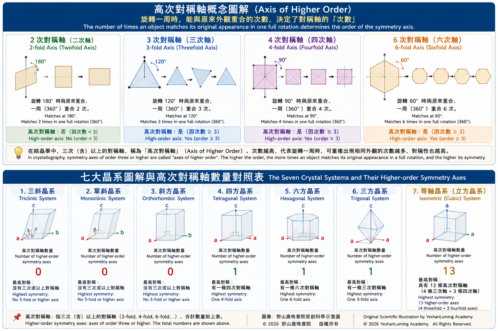
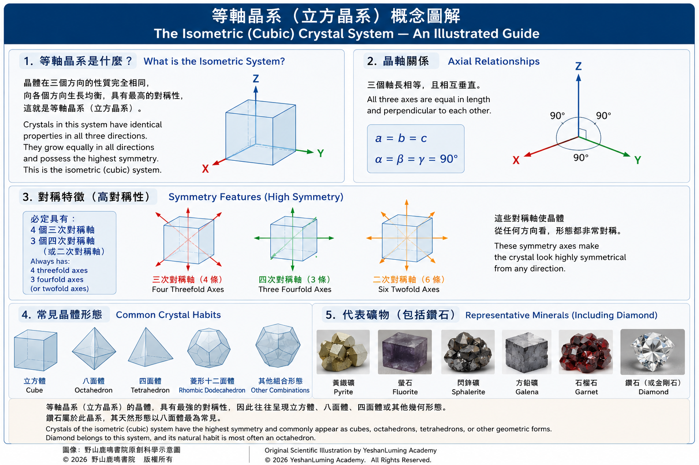

鑽石的晶體與形態·自然加切割的幾何之美The Crystal Structure and Form of Diamonds · The Geometry of Nature and Human Craftsmanship
The World of Gemstones · Diamond SeriesThe Crystal Structure and Form of Diamonds · The Geometry of Nature and Human Craftsmanship
The World of Gemstones · Diamond Series鑽石的晶體與形態·自然加切割的幾何之美
寶石世界·鑽石篇
寶石世界·鑽石篇（106）The World of Gemstones · Diamond Series (106)
當人們看到鑽石時，通常看到的是被精心切割後的樣子，光亮、對稱、閃耀，幾乎完美。但如果把時間往回推，在切割之前，鑽石原石其實並不是這樣的完美形態。
鑽石在自然界中，有它原本自然形成的形狀。
這種形狀，不是來自人工設計，而是來自鑽石碳原子排列的方式。按照寶石學分類，鑽石屬於等軸晶系，其晶體沿三個相互垂直的晶軸方向均衡生長，因此往往呈現出高度對稱的幾何形態。
什麼是等軸晶系？下面是一個力求淺顯，卻仍然比較專業的解釋。內容有些抽象，不太容易理解，不過為了保持文章的完整性，還是把這一部分列在下面。
根據晶體對稱性的特點，可以把晶體劃分成七大晶系。再根據晶體是否具有高次對稱軸，以及高次對稱軸的數量，將七大晶系歸納為低級、中級與高級三個晶族。
這裡有一個比較難理解的名詞——「高次對稱軸」（Axis of Higher Order）。這個名詞是結晶學、幾何學和化學中常見的專業術語。
簡單來說，它是指一個物體，例如晶體或分子，繞著某一條中心軸旋轉360度時，能夠與旋轉前的外觀重合幾次。
當人們看到鑽石時，通常看到的是被精心切割後的樣子，光亮、對稱、閃耀，幾乎完美。但如果把時間往回推，在切割之前，鑽石原石其實並不是這樣的完美形態。
鑽石在自然界中，有它原本自然形成的形狀。
這種形狀，不是來自人工設計，而是來自鑽石碳原子排列的方式。按照寶石學分類，鑽石屬於等軸晶系，其晶體沿三個相互垂直的晶軸方向均衡生長，因此往往呈現出高度對稱的幾何形態。
什麼是等軸晶系？下面是一個力求淺顯，卻仍然比較專業的解釋。內容有些抽象，不太容易理解，不過為了保持文章的完整性，還是把這一部分列在下面。
根據晶體對稱性的特點，可以把晶體劃分成七大晶系。再根據晶體是否具有高次對稱軸，以及高次對稱軸的數量，將七大晶系歸納為低級、中級與高級三個晶族。
這裡有一個比較難理解的名詞——「高次對稱軸」（Axis of Higher Order）。這個名詞是結晶學、幾何學和化學中常見的專業術語。
簡單來說，它是指一個物體，例如晶體或分子，繞著某一條中心軸旋轉360度時，能夠與旋轉前的外觀重合幾次。
若要進一步理解這個概念，可以這樣想像：
1．什麼是「對稱軸」？
想像一個像魔方一樣四四方方的立方體，在它的正中心有一根上下穿過的金屬棍。這根金屬棍位於立方體正中央，立方體可以圍繞它旋轉，因此它就是一條對稱軸。
當這個立方體繞著對稱軸旋轉時，每轉動90度，物體的外觀就會與旋轉前重合一次。旋轉一周共重合四次，因此這條軸就被稱為「四次對稱軸」。
如果我們在一張長方形硬紙板的中央穿入一根金屬棍，讓它圍繞這根軸旋轉，那麼旋轉180度時，紙板的外觀會與原來重合。旋轉一周共重合兩次，因此這根金屬棍所代表的軸，就叫做「二次對稱軸」。
相反，如果把物體換成一個正立體六方形，沿著穿過正立體六方形中心的軸旋轉，每轉動60度，物體的外觀就會與原來重合一次。旋轉一周共重合六次，因此這個中心軸就被稱為「六次對稱軸」。
2．什麼是「高次對稱軸」？
物體旋轉一周時，能夠與原來的外觀重合幾次，就代表中間的對稱軸是幾次對稱軸。
在結晶學中，三次及三次以上的對稱軸，通常被稱為「高次對稱軸」。
這個問題理解了，那麼下面的內容就不難了。
如果您想更深研究，理解這個概念， 請看下面這張圖， 這是專門設計， 為了讓您了解什麼是高次對稱軸的示意圖， 希望對您理解這個科學術語有所幫助。

Click to enlarge
鑽石所屬的等軸晶系（Isometric System），又稱立方晶系，是七大晶系之一，屬於高級晶族。等軸晶系具有四條三次對稱軸，其三個結晶軸相互垂直；在高對稱類別中，還具有三條相互垂直的四次對稱軸。
該晶系的軸長滿足：
a = b = c
軸角為：
α = β = γ = 90°
也就是三個晶軸長度相等，且彼此垂直，是七大晶系中對稱程度最高的晶系。這句話看過就可以了，不必一定要徹底理解。
等軸晶系的典型晶體可呈立方體、八面體、菱形十二面體及其組合形態。代表礦物包括黃鐵礦、螢石、閃鋅礦、方鉛礦、石榴石，甚至食鹽。當然，其中最著名的就是鑽石，也稱為金剛石。
等軸晶系的三個晶軸長度相等，而且彼此垂直。通俗地說，就是這類晶體在長、寬、高三個方向上的尺度比較均衡，從不同方向觀察，整體比例通常較為接近。常見形態包括立方體、八面體、菱形十二面體等。
鑽石的晶體結構，是決定其物理和化學性質的重要因素之一。每個傳統立方晶胞包含8個碳原子；每個碳原子都以 sp³ 混成軌域與周圍四個碳原子形成共價鍵，從而構成堅固的三維晶體框架。
這種晶體框架賦予了鑽石高硬度、耐磨性與穩定性等特性，使鑽石成為目前自然界中已知最硬的天然物質。
最後這一段話才是關鍵。只要明白鑽石的硬度來自其天生的晶體結構，對本篇文章而言，就已經足夠了。至於更深入的晶體學知識，並不是本篇的重點。
如果您還想繼續深入了解鑽石晶體的秘密，那麼請看下面這張圖。這是專門為您準備的，看過之後就會更加明白。不要被那些繞口的專業名詞難住。說得簡單一些，等軸晶系解釋的，就是鑽石特殊的晶體結構與生長方式，以及由此產生的物理特性。

Click to enlarge
最常見的天然鑽石晶形之一，是八面體，也就是由八個等邊三角形晶面構成的立體形態。這種形態並不是偶然，而是碳原子在三維空間中穩定排列後，自然形成的結果。
當鑽石在地幔中緩慢生長時，碳原子會一層一層附著在鑽石晶體表面，逐漸擴大體積。在這個過程中，某些晶面會比其他方向更加穩定，從而形成平整而清晰的外表面。這些晶體面，最終構成了我們現在看到的天然鑽石原石形態。
除了八面體之外，鑽石原石還可能呈現其他形狀，例如立方體、菱形十二面體，或者不同晶形組合而成的聚形。有些晶體邊緣會受到侵蝕，逐漸變得圓滑；有些則保留著清晰的稜角。這些差異，往往與形成環境、溫度變化以及後期地質作用有關。
寶石學研究確認，天然鑽石晶體的外形，是內部碳原子結構的直接反映。
也就是說，鑽石之所以呈現出這些幾何形態，是因為它的原子排列本身就具有高度對稱性。外部形狀並不是附加的，而是內部原子排列秩序的自然延伸。
然而，天然鑽石的形狀，並不總是適合用來展現最佳的光學效果。八面體雖然規則，卻不能讓光線在內部按照理想路徑充分反射，展現出最佳的亮度與火彩。
因此，人類開始研究和切割鑽石原石，希望在盡可能保留重量的同時，最大程度地釋放光線，展現鑽石之美。鑽石重量畢竟是決定價格的重要因素之一。
正如魚與熊掌往往難以兼得，優秀的鑽石切割師必須在鑽石的美感與重量之間取得平衡。這是一道非常艱難的選擇題。因此，對一顆鑽石原石，特別是大型或特殊原石制定切割方案，往往不能以天計算，耗時數月甚至數年也並不罕見。
這也是鑽石從一種「礦物」轉變為「寶石」的重要過程，或者說，是一次華麗的轉身。
在切割之前，鑽石原石是大自然的產物，是大自然創造的天然晶體；在切割之後，它則成為人類審美與切割技術的結合體。原本的晶體被重新設計，形成數十個切割刻面，讓光線在其中產生更加複雜的運動路徑，把鑽石原本具有的自然之美，呈現在人們眼前。
但是，即使經過人類加工，鑽石仍然會保留某些來自大自然的痕跡。例如晶體的生長紋、內部結構方向等，都會影響最終的切割方式。也就是說，人類並不能完全掌控並自由塑造鑽石最後的形狀，而必須順應其天然晶體結構，再加以改善。
寶石學研究認為，這種順應自然結構的加工方式，不僅十分重要，而且是確保切割成功的必要條件。因為鑽石在某些晶體方向上具有明顯的解理，如果切割不當，可能會沿著原始晶體結構裂開，那就會造成一場災難。
因此，一位優秀的鑽石切割師，不僅要懂得如何加工和切割鑽石，更要首先理解鑽石晶體本身的規律，順應它，再加以改造，使它變得更加完美。
從這個意義上講，鑽石就多了一層意義。它既是自然形成的幾何形體，也是人類理解自然之後的完美再創造。
當我們看到一顆切割完成的鑽石時，很容易被它的對稱與光彩吸引。但如果仔細想一想，那些規整的形狀，其實源自地球深處最初的原子排列。人只是把大自然原本的美，更完美地呈現出來。
換句話說，人工的完美，是建立在自然美的基礎之上。
如果沒有最初那個天然晶體的雛形，也就不會有後來經過精密計算的切割設計。如果沒有大自然首先形成的晶體結構，人類再精密的切割技術，也無從施展。正如雕刻家必須先有一塊合適的材料，才能在其基礎上完成作品。
這樣看來，鑽石形態的改變，不只是幾何體如何設計的問題，而是一種從自然到人工的過渡。它從地幔中誕生，帶著原始的幾何結構，最終在人類手中，被重新塑造成另一種更加適合展現光學效果的幾何形態，可以更加完美地反射光線，展現，或者更準確地說，釋放出大自然創造的美。
正是因為如此，鑽石在所有寶石中才顯得更加獨特。它既不是純粹的大自然產物，也不是完全的人造產品，而是兩者之間的一種巧妙結合。
人類在大自然造物主創造的幾何晶體基礎上，運用科學的切割技術，把大自然創造的晶體之美完美地釋放出來。二者相輔相成，缺一不可。
（未完待續）
When people look at a diamond, what they usually see is its carefully cut and polished form—brilliant, symmetrical, sparkling, and seemingly perfect. Yet if we turn back the clock to a time before the cutting process began, a rough diamond looked nothing like the gem we admire today.
A diamond has its own natural form long before it is touched by human hands.
That form is not the result of artistic design. Rather, it is determined by the arrangement of carbon atoms within the crystal. According to gemological classification, diamond belongs to the isometric crystal system. Because its crystal grows uniformly along three mutually perpendicular crystallographic axes, it naturally develops highly symmetrical geometric forms.
What exactly is the isometric crystal system?
The following explanation is intended to be as accessible as possible while remaining scientifically accurate. It is admittedly somewhat abstract, but to preserve the completeness of this article, it is worth introducing the basic concepts.
Based on their symmetry, crystals are classified into seven crystal systems. According to whether they possess higher-order symmetry axes—and how many—they are further grouped into three broader crystal families: low-symmetry, intermediate-symmetry, and high-symmetry systems.
At this point, we encounter a technical term that may sound unfamiliar: the Axis of Higher Order.
This expression is widely used in crystallography, geometry, and chemistry.
Simply put, it refers to the number of times an object—such as a crystal or a molecule—matches its original appearance during one complete 360-degree rotation about a particular axis.
When people look at a diamond, what they usually see is its carefully cut and polished form—brilliant, symmetrical, sparkling, and seemingly perfect. Yet if we turn back the clock to a time before the cutting process began, a rough diamond looked nothing like the gem we admire today.
A diamond has its own natural form long before it is touched by human hands.
That form is not the result of artistic design. Rather, it is determined by the arrangement of carbon atoms within the crystal. According to gemological classification, diamond belongs to the isometric crystal system. Because its crystal grows uniformly along three mutually perpendicular crystallographic axes, it naturally develops highly symmetrical geometric forms.
What exactly is the isometric crystal system?
The following explanation is intended to be as accessible as possible while remaining scientifically accurate. It is admittedly somewhat abstract, but to preserve the completeness of this article, it is worth introducing the basic concepts.
Based on their symmetry, crystals are classified into seven crystal systems. According to whether they possess higher-order symmetry axes—and how many—they are further grouped into three broader crystal families: low-symmetry, intermediate-symmetry, and high-symmetry systems.
At this point, we encounter a technical term that may sound unfamiliar: the Axis of Higher Order.
This expression is widely used in crystallography, geometry, and chemistry.
Simply put, it refers to the number of times an object—such as a crystal or a molecule—matches its original appearance during one complete 360-degree rotation about a particular axis.
To understand this concept more intuitively, imagine the following examples.
1. What Is a Symmetry Axis?
Imagine a cube similar to a Rubik's Cube. Passing vertically through its exact center is a metal rod. This rod represents a symmetry axis, because the cube can rotate around it.
As the cube rotates, every 90 degrees it appears exactly the same as before. During one complete rotation of 360 degrees, the cube matches its original appearance four times. Therefore, this is called a fourfold symmetry axis.
Now imagine inserting a rod through the center of a rectangular board. As it rotates, the board matches its original appearance every 180 degrees. During one full rotation, it coincides with itself twice, so the rod represents a twofold symmetry axis.
Conversely, imagine replacing the object with a regular hexagonal prism. Rotating it around the axis passing through the centers of the two hexagonal faces, the object repeats its original appearance every 60 degrees. In one complete rotation, it matches itself six times, making this a sixfold symmetry axis.
2. What Is an Axis of Higher Order?
The number of times an object coincides with its original appearance during one complete rotation determines the order of its symmetry axis.
In crystallography, threefold symmetry axes and all symmetry axes of higher order are collectively referred to as axes of higher order.
Once this idea becomes clear, the discussion that follows becomes much easier to understand.
If you would like to explore this concept in greater depth, please refer to the illustration below. It was specially designed to explain the idea of higher-order symmetry axes and, hopefully, make this scientific term much easier to visualize.
Click to enlarge
Diamond belongs to the Isometric Crystal System, also known as the Cubic Crystal System. It is one of the seven crystal systems and belongs to the highest symmetry class. The isometric system possesses four threefold symmetry axes, with its three crystallographic axes mutually perpendicular. In its highest symmetry class, it also possesses three mutually perpendicular fourfold symmetry axes.
The lattice parameters satisfy the following relationships:
a = b = c
with interaxial angles of
α = β = γ = 90°
In other words, all three crystallographic axes are equal in length and intersect at right angles, giving the isometric system the highest degree of symmetry among the seven crystal systems. Simply reading this statement is sufficient—you do not need to master every detail.
Typical crystal forms within the isometric system include cubes, octahedra, rhombic dodecahedra, and combinations of these forms. Representative minerals include pyrite, fluorite, sphalerite, galena, garnet, and even halite (rock salt). Among them, however, the most famous is undoubtedly diamond, also known as adamant.
The three crystallographic axes of the isometric system are equal in length and mutually perpendicular. Put simply, crystals in this system grow with roughly equal dimensions in length, width, and height. As a result, they tend to exhibit similar overall proportions when viewed from different directions. Common crystal forms include cubes, octahedra, and rhombic dodecahedra.
The crystal structure of diamond is one of the most important factors determining its physical and chemical properties. Each conventional cubic unit cell contains eight carbon atoms. Every carbon atom forms covalent bonds with four neighboring carbon atoms through sp³ hybrid orbitals, creating an exceptionally strong three-dimensional crystal framework.
This framework gives diamond its extraordinary hardness, outstanding wear resistance, and remarkable structural stability, making it the hardest naturally occurring material known on Earth.
The final point is the one that truly matters. As long as you understand that a diamond's hardness originates from its natural crystal structure, you have already grasped the essential idea of this article. A deeper study of crystallography lies beyond our present discussion.
If you would like to explore the secret of diamond crystals further, please look at the illustration below. It was specially prepared to make these concepts easier to understand. Don't let the technical terminology intimidate you. In simple terms, the isometric crystal system explains the unique crystal structure and growth pattern of diamond—and the remarkable physical properties that result from them.
Click to enlarge
One of the most common natural crystal forms of diamond is the octahedron, a solid bounded by eight equilateral triangular faces. This shape is not accidental. It is the natural consequence of carbon atoms arranging themselves into a stable three-dimensional crystal lattice.
As diamonds grow slowly within the Earth's mantle, carbon atoms are added layer by layer to the crystal surfaces, gradually increasing the crystal's size. During this process, certain crystal faces prove more stable than others, eventually forming the smooth, well-defined surfaces characteristic of natural diamond crystals.
Besides octahedra, rough diamonds may also occur as cubes, rhombic dodecahedra, or complex combinations of several crystal forms. Some crystal edges become rounded through natural corrosion, while others retain their sharp, well-defined edges. These differences are closely related to the conditions under which the diamonds formed, later temperature changes, and subsequent geological processes.
Gemological studies have confirmed that the external shape of a natural diamond crystal directly reflects the arrangement of its internal carbon atoms.
In other words, the remarkable geometric forms of diamond exist because its atomic structure itself possesses an exceptionally high degree of symmetry. Its external appearance is not something added afterward—it is simply the outward expression of its internal atomic order.
Yet the natural shape of a diamond is not always ideal for producing the finest optical performance. Although the octahedron is highly symmetrical, it cannot direct light along the optimal paths needed to maximize brilliance and fire.
For this reason, people began studying and cutting rough diamonds, seeking to release as much light as possible while preserving as much weight as possible. After all, carat weight remains one of the most important factors determining a diamond's value.
Just as one cannot always have both the fish and the bear's paw, a skilled diamond cutter must constantly balance beauty against weight. This is an extraordinarily difficult decision. Developing the cutting plan for a large or exceptional rough diamond often requires months—or even years—of careful study.
This marks the important transformation of diamond from a mineral into a gem—or, one might say, its magnificent metamorphosis.
Before cutting, a rough diamond is simply one of nature's creations—a natural crystal formed deep within the Earth. After cutting, however, it becomes a union of human aesthetics and technical mastery. The original crystal is redesigned into dozens of precisely angled facets, allowing light to follow far more intricate paths and revealing the natural beauty that was always hidden within.
Even after human craftsmanship, however, diamonds still preserve traces of their natural origin. Growth lines, internal crystal orientation, and other structural features continue to influence how the stone must be cut. In other words, people cannot completely reshape a diamond at will; they must first respect its natural crystal structure before refining it.
Gemological research has shown that working in harmony with nature is not merely desirable—it is essential for successful cutting. Because diamond possesses distinct cleavage directions, an incorrect cut may cause the crystal to split along its natural planes, resulting in a catastrophic loss.
A truly outstanding diamond cutter therefore needs more than technical skill. Above all, the cutter must understand the natural rules governing the diamond crystal itself, work with those rules, and then improve upon nature's creation.
From this perspective, diamond acquires an even deeper meaning. It is both a naturally formed geometric crystal and a masterpiece recreated through humanity's understanding of nature.
When we admire a finished diamond, we are naturally captivated by its symmetry and brilliance. Yet those perfectly ordered facets ultimately trace their origins back to the original atomic arrangement formed deep within the Earth. Human craftsmanship has simply revealed nature's beauty in its most perfect form.
In other words, human perfection is built upon the perfection of nature.
Without the original natural crystal, there could be no precisely calculated cutting design. Without the crystal structure first created by nature, even the finest cutting technology would have nothing upon which to work. Just as a sculptor must first possess a suitable block of stone before creating a masterpiece, so too must the diamond cutter begin with nature's own creation.
Seen from this perspective, the transformation of a diamond's form is not merely a question of geometric design. It represents a transition from nature to craftsmanship. Born deep within the Earth's mantle with its original crystal geometry, the diamond is ultimately reshaped by human hands into another geometric form better suited to displaying its optical beauty—reflecting light more perfectly and, perhaps more accurately, releasing the beauty that nature created.
For this reason, diamond occupies a unique place among all gemstones. It is neither purely a product of nature nor entirely a product of human hands. Rather, it is a remarkable partnership between the two.
Building upon the geometric crystal created by the Creator through nature, humanity applies scientific cutting techniques to reveal the crystal beauty that nature has already placed within it. Together, nature and human craftsmanship complement one another perfectly. Neither is complete without the other.
(To be continued)